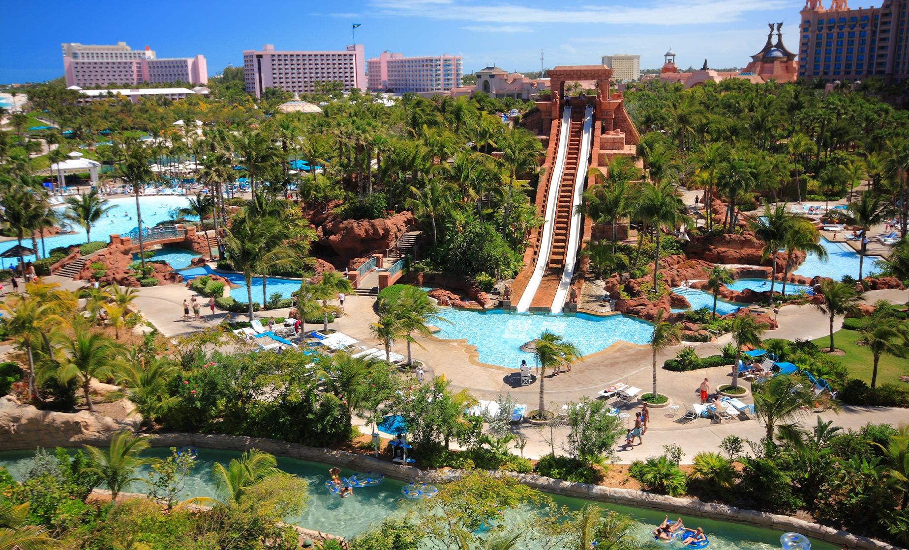

Bahamas Aquaventure Water Park (Nassau, Bahamas)
Informações Gerais
Galeria
Atrações e Atividades
Horários/ Preços e Ingressos

Atrações
Aquários e Lagos com Vida Marinha.
Piscinas Infantis.
Piscinas Relaxantes.
Cabanas Privadas.
Interação com Golfinhos.
Atividades
Excursões de meio dia.
Passeios de 4x4.
Passeios urbanos.
Excursões pela natureza e vida selvagem.
Locação de lanchas.
Excursões de um dia.
Passeios aquáticos.
Excursões autoguiadas.